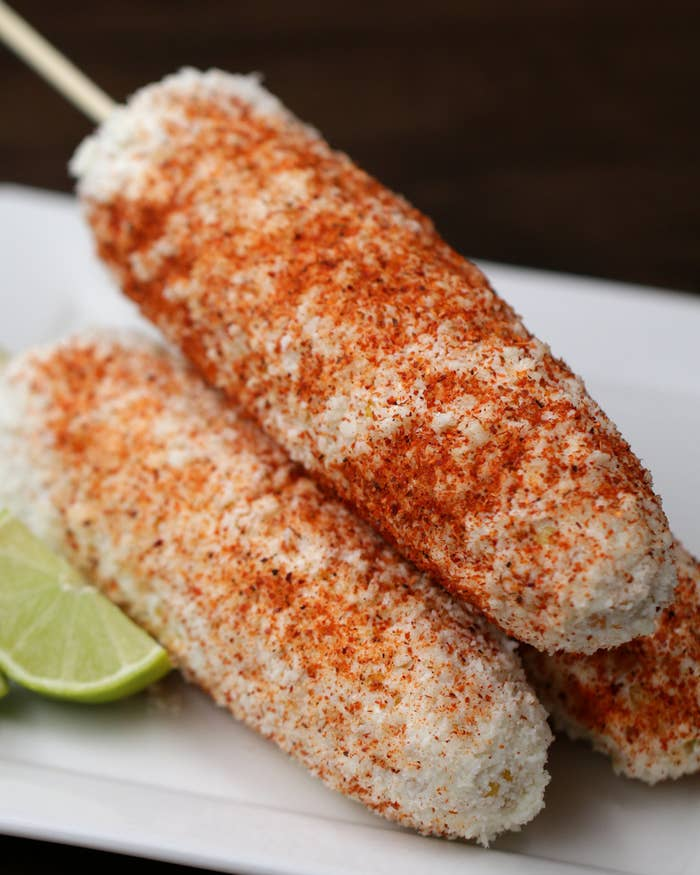

Elote

Description
This traditional central and south american dish is the perfect sweet and spicy side. Pair it with a reverse seared steak and lemon-lime soda for a complete delicious meal
Ingredients
- Unpeeled sweet corn cobs
- Your favorite mayonaise
- Ground paprika
- Ground cayenne
Steps
- Preheat oven for 400 degrees
- Place corn cobs directly on middle rack and cook for 30 minutes
- Remove corn cobs and peal
- Slather with mayo
- Season with paprika and cayenne to taste